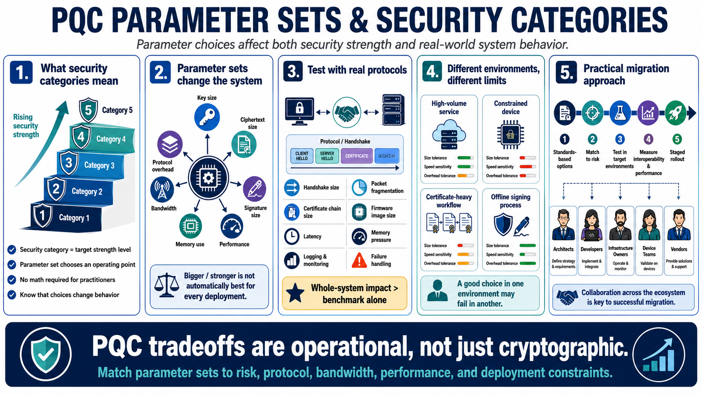

Parameters, Security Categories, and Practical Tradeoffs
Connecting to LMS... Progress: in progress

Narration
NIST PQC standards use parameter sets and security categories to describe intended strength levels and operational choices. At a high level, a security category helps compare an algorithm parameter set to a target level of classical security strength. Practitioners do not need to perform the mathematics, but they do need to understand that parameter choices affect both security posture and system behavior.
Parameter sets influence key sizes, ciphertext sizes, signature sizes, performance, memory use, bandwidth, and protocol overhead. Larger or stronger is not automatically better for every deployment. A high-volume service, a constrained device, a certificate-heavy workflow, and an offline signing process may all have different limits. A parameter choice that is acceptable in one environment may cause interoperability or performance problems in another.
This is why PQC migration requires testing with real protocols and realistic traffic. The impact is not only the algorithm benchmark. It is the behavior of the whole system: handshake size, packet fragmentation, certificate chain size, firmware image size, hardware capacity, latency, memory pressure, logging, monitoring, and failure handling. Small assumptions can become large deployment issues.
The practical approach is to match parameters to risk, protocol, and operational constraints. Start with standards-based options, then test in the environments where they will run. Security teams should bring architects, developers, infrastructure owners, device teams, and vendors into the conversation early. PQC is cryptographic, but its tradeoffs are deeply operational.